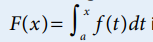
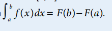

HOME
Learning Objectives
- Evaluate definite integrals analytically using the Fundamental Theorem of Calculus.
- An antiderivative of a function f is a function g whose derivative is f.
- If a function f is continuous on an interval containing a, the function defined by

is an antiderivative of f for x in the interval.
- If f is continuous on the interval [a, b] and F is an antiderivative of f, then

Fundamental Theorem of Calculus
Notes on FTC
Graphs
External Practice and Video
Practice pdf (external)
practice pdf with solutions (external)
Practice pdf
Practice - external - applying properties of definite integrals
External Notes and Video
Natural Logarithms
Previous Topic Next Topic